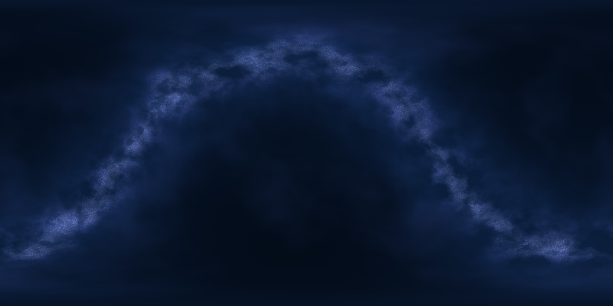

Operator sahaja · SPACE / L = mula · ESC = kembali ke sfera
MOD UJIAN VR · Seret tetikus: pandang · W/A/S/D: bergerak · R: pusat semula · Klik sfera: mula
PERSEDIAAN FILEM DALAM HEADSET
Pilih Pelancaran.mp4 yang telah disalin ke headset. Fail tidak akan dimuat turun dari Internet.
FILEM PELANCARAN
GUNA FAIL TEMPATAN
